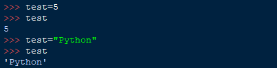

En programmation, et donc en Python, une variable est un espace de stockage pour un résultat. Une variable contient une valeur qui peut changer au cours de l’exécution du programme. En Python on déclare une variable en même temps que l’on l’initialise :
var=5
2*var
10
var=3
2*var
6
Ici on initialise la variable «var» à laquelle on fixe la valeur 5 grâce au symbole « = »on fait un calcul et on change la valeur de «var» en 3.
Si on tente d’utiliser une variable sans lui fixer de valeur on a l’exception qu’on a vu dans la partie Erreur :
fig.1 : Erreur de définition de la variable
En Python on peut utiliser la variable « _ » pour utiliser le résultat précédemment obtenu (comme le bouton Ans sur une calculatrice scientifique) :
>>> 5*2
10
>>> 5+_
15
Les Types de variables
À présent il est temps de parler du type de variables.
Le Python est un langage à typage dynamique, on ne précise donc pas le type de la variable à la création, l’ordinateur déduit lui même le type associé pour savoir si il peut faire ou ne pas faire certaines opérations.
Cela permet entre autre de ne pas fixer un type à une variable et de pouvoir changer le type de valeur qu’elle contient à la volée :

fig.2 : En Python, on peut à tout moment changer quel type de variable se trouve dans celle-ci
Ici on fixe d’abord 5 (int) à la variable « test » et on change ensuite en y mettant la chaîne de caractère « Python » .
Cependant, on ne peut pas faire des opérations avec deux variables de types différents (comme str et int), cela mène à l'erreur vu précedemment.
Il existe différents types de variables, notamment les types int (entiers) float (flottant, à virgule) complex ou encore str (String, chaînes de caractères) ou même boolean.
Penchons un peu sur ce dernier dans la prochaine partie du cours !